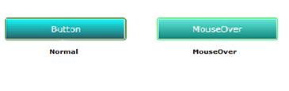

You can customize the brushes used in the built-in skins for the Microsoft controls.
The following steps explain how to apply the custom brushes for the Silverlight controls.
1. Create a new ResourceDictionary in the sample. Define the brushes in the newly created ResourceDictionary. Each brush should have a unique key. Keys in the new ResourceDictionary and the keys defined in the Syncfusion ResourceDictionary must be same.
Key name for each control is available in the following location.
http://www.syncfusion.com/uploads/redirect.aspx?&team=support&file=SL_KeyFile579216365.zip
2. Enable the custom brush before setting the custom brushes. This can be set by using the SetIsCustomBrushEnabled property.
3. Set the custom brushes using the SetCustomBrushDictionary method. This method has two arguments.
· First argument specifies the name of the control.
· Second one specifies the ResourceDictionary.
The below code snippet illustrates how to set the custom brushes to the control.
|
[C#] // Set the VisualStyle. SkinManager.SetVisualStyle(button, VisualStyle.Office2007Blue); // Enable the Custom Brush. SkinManager.SetIsCustomBrushEnabled(button, true); // Define the ResourceDictionary. ResourceDictionary resource = new ResourceDictionary(); // Load the ResourceDictionary source. r.Source = new Uri(@"/checksample;Component/Brushes.xaml",UriKind.RelativeOrAbsolute); // Set Custom Brush. SkinManager.SetCustomBrushDictionary(button, resource);
|
The output is as shown below.

Figure 1161: Button with Custom Brushes